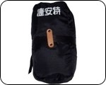
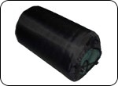

Giant FCR1
單車，環法的第二主角。
93年7月份以NT.21,000購入。

Apple iBook
筆記型電腦，之前環島就帶著趴趴走。
邊騎車旅行邊整理遊記、照片。
購入4年半，機型G3-500，升級過硬碟＆RAM)。
附帶還有電池、充電器、2.5"硬碟轉接盒+10GB硬碟。
Casio EX-Z55
500萬畫素、3倍光學變焦、2.5" LCD。
512 MB SanDisk 記憶卡。
副廠電池+1、座充、USB連接線。
東加西加，NT.15,900。
Apple iPod photo
MP3隨身聽，Apple iPod photo-30GB。
裡頭裝滿了從袺成那搜刮來的龐大蒐藏CD。
滿滿的歌曲中還夾帶著『橫春兮的工商服務』。
Scott還送了一個原廠線控，感恩。
iPodPlay提供的無敵友情價-NT.11,235
泰國航空 來回機票
透過易遊網訂的機票，七月十六日晚上八點出發。
到曼谷轉機，十七日早上七點抵達巴黎。
票價：NT.30,960
Sigma BC-500 單車碼表
聽說是很耐摔的系列，能記錄時速、總累積里程、
騎乘時間、騎乘距離...等資訊，相當方便。
Road 4954 打氣筒
在國外連去腳踏車店給輪胎打氣都要收錢 @@"
自己準備一個方便攜帶又好用的打氣筒是必備的。
在荒郊野外遇到熊還可以當防身近戰武器，NT.700。
個人藥品
感冒藥、胃腸藥、防曬油、小護士、
OK繃、肌樂、護唇膏....。
中華民國護照、法國簽證
退伍之後再去外交部排隊辦護照。
其實交給旅行社代辦就好了，但想自己辦學個經驗。
法國簽證就比較麻煩，一般只能停留30天，實在太短。
到時候附上旅行計畫書，希望能將簽證延長到60天。
法國地圖
手上唯一的地圖是去法國在台協會拿免錢的。
2002年的版本，比例尺---1公分：20公里。
地圖只要能提供個大致的方向就可以了。
太過於詳細反而令人昏頭轉向∼

現金、旅行支票、信用卡
好窮呀 T_T 現金短缺、旅費不足。
可能會去辦個人信用貸款作為旅行資金。
一部份帶現金（歐元），其他就轉購旅行支票。
再帶兩張總額度約NT10,000的信用卡作為救急。
個人衣物
預計帶三天份左右的衣物。
一套是騎車的時候穿，保持骯髒，想到在洗。
一套是住宿、拜訪、睡覺的時候穿，保持乾淨。
一套是保暖系的衣物、風衣，肩負防曬、擋雨功能。
太陽眼鏡
當初環島的時候真的發現太陽眼鏡非常的實用。
擋漫天的風砂、擋刺眼的太陽、擋嘩啦的雨滴。
更好用的是可以光明正大的偷描檳榔西施不會被發現∼
機車連黑帽
說穿了就是一頂能遮太陽的帽子。
是在機車連當兵專屬的戰利品之一。
代表著忠貞的憲兵以及榮譽的機車連。
帽子上大剌剌的繡上自己的名字，不能戴著壞事。
台灣國旗
從機車連A出來的，每次只要連上出勤務。
都會在車前面綁上兩面國旗，看起來格外的有氣勢。
打算在單車後座綁上一面，一邊旅行一邊宣揚國威。

攜車袋
單車要經過簡單的拆解之後才能帶上飛機。
拆解後就裝在攜車袋中，如同一個軟式行李箱。
單車的分解跟結合又是另外一堂重要的課題。
購入價：NT.1,500
拆車工具手把
八種拆單車用的六角板手規格。
2/2.5/3/4/5/6 mm。
用它能將單車分解的徹徹底底。
換內胎＆補胎工具
爆胎的話，基本上得自己處理。
上次環島什麼都沒帶，結果只好蹲在路邊裝可憐。
好加在遇到好心人載我一程∼
Giant 700X23/25C 內胎
萬一爆胎的話，用補胎的方式並不太理想。
最好是能乾脆的把整條內胎換掉。
一條特價NT.100，先買個5條當庫存。

太陽牌 車尾燈
S-SUN 出品，裝在車子屁股的車尾燈。
夜間騎乘時有警示後方來車的功能，多一層保障。
貓眼牌 車頭燈
三顆白光LED構成的LED手電筒。
可以裝載車上做照明，也可以拆下來使用。
四顆A3電池，可以使用220小時，相當划算。

捷安特 單車鎖
這種鎖只能防君子，防不了小人。
要是拿來鎖前輪，那小偷就留個前輪給你，其他搬走。
要是拿來鎖車身，那兩個輪胎肯定不翼而飛∼
最好的方式，就是車不離身，一秒也不離開自己的眼睛。
雅芳 防陽防曬噴霧
少了防曬保護的話，不單單是曬黑的問題。
而是會曬傷的，之前環島輕微曬傷就很難受，
這次絕對要作好防曬工作，SPF30應該夠用。
用噴的，而且能防水，適合懶人使用。
Linda贈 *^^*
遠流 法國
DK編輯部製作，環法行程的參考書。
超優超詳細的資訊應有盡有。
價錢也很貴，NT.760 =.=
預計六十天環法一週的行程表
大致上先規劃出每一天騎到什麼地方。
雖然說行程規劃太死就沒有彈性也少了點樂趣。
但是什麼都沒有準備的話，是無法讓人信服的。
路線真的照自己當初的理想，環了法國一整圈。
羽毛絨睡袋
重量1.0 Kg，可耐寒到零下-20度。
捷峰出品，建議售價NT.6,000。
Abula友情贈送 *^^*

充氣型睡墊
打開就會自動充氣，如果睡在野地或是雪地的話。
拿來鋪在地上能隔絕寒冷的侵襲。
Abula友情贈送 *^^*
MONOLITH 單車馬鞍袋
分左、右、上三個袋子，上層可拆卸當作一般背包。
防水、反光警示條。裝東西的機能還算不錯。
EXUSTAR E-SM501卡鞋
俗稱SPD的卡鞋，讓騎單車更舒適有效率。
野外登山/SPD兩用鞋，顏色、灰色。尺寸：45號。
達陸單車行李架
負重15KG，附帶有側支架的行李架。
側支架的用途在於讓行李不會卡到車輪。
Vanson萬國插座旅行組
型號：TS-1650
特色是附有五種的各國插座轉接頭。
另外能將國外220V的電壓轉成110V。
家瑋友情相借 *^^*
旅遊平安險
泰安產物保險-旅遊平安險。
保障環法60天的安危，保費NT. 2,598元，保額一千萬。
青年旅館住宿會員卡
世界通用的唷，憑卡可以在世界個第數千家的青年旅館住宿。
因為旅費拮据，到了法國十天有九天都要住YH啦。
兩件式雨衣
菜市場買的便宜雨衣，分上下兩截式，方便活動，擋雨效果也比較好。
天氣很冷的時候，上衣也能拿來當禦寒的風衣穿。
當初環島的時候曾經淋雨騎車，相當辛苦，雨具絕對是必需品。
NOKIA 2600
耐摔，掉了也不會心疼，再搭一個原廠電池。
遠傳門號，國際漫遊，NT990。
（另一隻是NOKIA8250+台灣大哥大）。
VREDESTEIN外胎
不便宜，一條訂價NT.1,200，多一分準備、少一分遺憾。
Giant 單車手套
本來不打算買的，因為覺得太專業用不到。
但這陣子感覺其實雙手在騎車的時候受到的摩擦挺大的。
為了長遠之際著想，還在買個手套比較舒適。